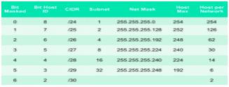
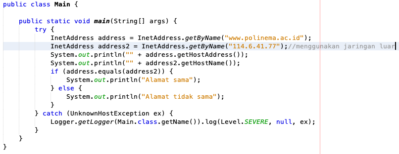

Awali setiap sebelum membuat projek dengan berdoa.
Baca dan pahami tujuan, dasar teori, dan latihan-latihan modul dengan baik.
Kerjakan tugas-tugas projek dengan baik, sabar dan jujur
Ulasan Teori
Host adalah perangkat yang terhubung dalam suatu jaringan komputer. Host dapat berupa komputer, router, IP kamera, IP printer, akses poin, perangkat genggam, dan lain sebagainya. Setiap host dalam jaringan internet atau TCP/IP diidentifikasikan dengan alamat unik yang terdiri dari 4 byte Internet Protocol
(IP).
Setiap alamat IP dituliskan perbagiannya dipisahkan dengan titik, dengan contoh format 192.168.1.10, di mana setiap bagian (byte) – nya menggunakan integer positif antara 0 sampai 255. Sehingga ada sekitar 4 milyar alamat IP yang bisa dibuat secara unik. Walaupun begitu, saat ini jumlah sedemikian itu tidaklah cukup dibagi untuk perangkat-perangkat atau host yang ada dan terus diproduksi saat ini.
Sehingga solusinya adalah penggunaan IPv6 yang terdiri dari 128 bit alamat, yang artinya 4x lebih banyak dari IPv4 yang hanya terdiri dari 32 bit (4 byte) alamat. Saat ini, tidak semua ISP menerapkan IPv6 pada jaringan yang dikelolanya.
IPv4
IP Address merupakan pengenal yang digunakan untuk memberi alamat pada tiap-tiap computer dalam jaringan. Format IP Address adalah bilangan 32 bit yang tiap 8 bitnya dipisahkan oleh tanda titik. Format IP Address dapat berupa biner (xxxxxxxx.xxxxxxx.xxxxxxxx.xxxxxxx) atau berupa bilangan desimal yang masing-masing dipisahkan oleh titik (dotted decimal) (xxx.xxx.xxx.xxx).
IP address merupakan bilangan biner 32 bit yang dipisahkan oleh tanda pemisah berupa tanda titik disetiap 8 bitnya. Tiap 8 bit ini disebut dengan oktet.
Bentuk dari IP address adalah sebagai berikut:
Pembagian kelas-kelas IP berdasarkan pada dua hal: Network ID dan host ID dari suatu IP. Network ID adalah bagian dari IP address yang digunakan untuk menunjuk jaringan tempat komputer ini berada. Host ID adalah bagian dari IP Address yang digunakan untuk menunjuk workstation, server, router dan semua host TCP/IP lainnya dalam jaringan tersebut.
Dikenal dua cara pembagian IP address:
Classfull Addressing
Classless Addressing
Classfull Addressing
Merupakan metode pembagian IP berdasarkan kelas dimana IP Address dibagi menjadi 5 kelas
Kelas A
Format :0nnnnnnn.hhhhhhhh.hhhhhhhh.hhhhhhhh
Bit pertama :0
Panjang NetID :8 bit
Panjang HostID :24 bit
Byte Pertama :0-127
Jumlah :126 Kelas A(0 dan 127 dicadangkan)
Range IP :1.xxx.xxx.xxx-126.xxx.xxx.xxx
Jumlah IP :16.777.214 IP Address disetiap kelas
Deskripsi :Diberikan untuk host dengan jumlah yang besar
Kelas B
Format :10nnnnnn.nnnnnnnn.hhhhhhhh.hhhhhhhh
Bit pertama :10
Panjang NetID :16 bit
Panjang HostID :26 bit
Byte Pertama :128-191
Jumlah :16384 Kelas B
Range IP :128.0.xxx.xxx-191.155.xxx.xxx
Jumlah IP :65.532 IP Address disetiap kelas B
Deskripsi :Dialokasikan untuk jaringan besar dan sedang
Kelas C
Format :110nnnnn.nnnnnnnn.hhhhhhhh.hhhhhhhh
Bit pertama :110
Panjang NetID :24 bit
Panjang HostID :8 bit
Byte Pertama :192-223
Jumlah :2.097.152 Kelas B
Range IP :192.xxx.xxx.xxx-223.255.255.xxx
Jumlah IP :254 IP Address disetiap kelas C
Deskripsi :Dialokasikan untuk jaringan berukuran kecil
Kelas D
Format :1110nnnn.nnnnnnnn.hhhhhhhh.hhhhhhhh
Bit pertama :1110
Bit Multicast :28 bit
Byte Inisial :224-247
Deskripsi :Kelas D digunakan untuk keperluan IP Multicast
Kelas E
Format :1111rrrr.rrrrrrrr.rrrrrrrr.rrrrrrrr
Bit pertama :1111
Bit Multicast :28 bit
Byte Inisial :248-255
Deskripsi :Kelas E dicadangkan untuk keperluan experimen
Classless Addressing
Merupakan metode pengalamatan tanpa kelas, yakni dengan mengalokasikan IP Address dalam notasi Classless Inter Domain Routing (CIDR). Proses memilih Network ID dan Host ID yang tepat untuk suatu jaringan. IP Address terdiri dari 2 bagian, yaitu:
Network ID:Menunjuk nomor network
Host ID :Mengindentifikasi host dalam satu network
Beberapa aturan dasar dalam menentukan network ID dan host ID yang hendak digunakan:
Network ID 127.0.0.1 tidak dapat digunakan, karena merupakan default yang digunakan untuk keperluan menunjuk dirinya sendiri (loop-back).
Host ID tidak boleh diset 1 (ex. 126.255.255.255), karena akan diartikan sebagai alamat broadcast. ID broadcast merupakan alamat yang mewakili seluruh anggota pada jaringan.
Network ID dan Host ID tidak boleh sama dengan 0 (ex. 0.0.0.0), karena IP address dengan host ID 0 diartikan sebagai alamat network. Alamat network adalah alamat yang digunakan untuk menunjuk suatu jaringan, dan tidak menunjuk suatu host.
Host ID harus unik dalam suatu network. Dalam suatu network tidak boleh ada dua host dengan host ID yang sama.
Aturan lain:
0/8 : 0.0.0.1 s/d 0.255.255.254
Host/net : 16.777.214
10/8: 10.0.0.1 s/d 10.255.255.254
Host/net : 16.777.214
127/8: 127.0.0.1 s/d 127.255.255.254
Host/net : 16.777.214
169.254/16: 169.254.0.1 s/d 169.255.255.254
Host/net : 65.534
172.16/12: 172.16.0.1 s/d 172.31.255.254
Host/net : 1.048.574 (Private Internet)
192.0.2/24: 192.0.2.1 s/d 192.0.2.254
Host/net : 254
192.168/16: 192.168.0.1 s/d 192.168.255.254
Host/net :65534
Semua space dari kelas D dan E dapat digunakan untuk IP Address Local Area Network, karena IP ini tidak digunakan di internet
Subnet
Konsep Subnetting dari IP Address merupakan teknik yang umum digunakan di internet untuk mengefisienkan alokasi IP Address dalam sebuah jaringan supaya bisa memaksimalkan IP Address. Subnetting merupakan proses memecah satu kelas IP Address menjadi beberapa subnet dengan jumlah host yang lebih sedikit, dan untuk menentukan batas network ID dalam suatu subnet, digunakan subnet mask.
Contoh subnet:
Contoh SubnetTabel Subnet
Subnetting
Jumlah Host per Network 2n -2,
n adalah jumlah bit tersisa sebelum diselubungi. Contoh: network prefix /10 maka bit tersisa adalah 32-10=22
222 -2=4194302
Jumlah subnet = 2 N
Dimana N adalah jumlah bit yang dipergunakan.
N=network prefix-8
Contoh: network prefix /10, maka
N=10-8 = 2
22 =4

Tabel Subnetting Ip Kelas C
DNS
Alamat IP yang berbentuk numerik dapat pula dipetakan dalam bentuk nama untuk kemudahan pemakaian oleh user, seperti www.google.com, mail.yahoo.com, dan lain sebagainya.
Alamat IP yang berbentuk numerik dapat pula dipetakan dalam bentuk nama untuk kemudahan pemakaian oleh user, seperti www.google.com, mail.yahoo.com, dan lain sebagainya.
Alamat IP dan JAVA
Java memiliki klas untuk mendefinisikan alamat IP, yaitu class java.net.InetAddress. Kelas ini memiliki tiga fungsi :
Mengenkapsulasi mengenkapsu alamat
Melakukan name-lookup name lookup (mengkonversi nama host ke alama IP)
Melakukan reverse-lookup (mengkonversi alamat IP ke nama host)
Objek dari class tersebut tidaklah dibuat dengan memanggil konstruktor classnya. Tidak ada konstuktor dari class InetAddress. Melainkan dengan memanggil method static dari class ini. Yaitu:
public static InetAddress getByName(String host) throws UnknownHostException
public static InetAddress[ ] getAllByName(String host) throws UnknownHostException
public static InetAddress getLocalHost() throws UnknownHostException
Setiap pembuatan objek dengan menggunakan method static di atas membutuhkan pengecekan dengan DNS. Pada java 1.4 ditambahkan method static untuk pembuatan objek dari class InetAddress yang tidak membutuhkan pengecekan dengan DNS lokal. Yaitu dengan menggunakan method:
public static InetAddress getByAddress(byte[ ] address) throws UnknownHostException
public static InetAddress getByAddress(String hostName, byte[] address) throws UnknownHostException
Selain method untuk menginstansi objek, class InetAddress memiliki method getter untuk memanggil nama host dalam bentuk String dan alamat IP dalam bentuk String atau array byte.
public String getHostName()
public byte[] getAddress()
public String getHostAddress()
Langkah Praktikum
Lakukan instalasi Netbeans di computer Anda, kemudian buatlah sebuah project baru seperti berikut:
Klik menu File >> New Project atau menggunakan shortcut dengan menekan kombinai tombol Ctrl + Shift + N atau dengan cara meng-Klik icon New Project pada toolbar.
Pada jendela New Project dibagian Categories silahkan anda pilih sesuai dengan kebutuhan anda. Disini saya memilih java. Dan dibagian Projects saya memilih java application. Setelah itu klik Next.
Menu Netbeans
Pada jendela New Java Application dibagian Project Name silahkan anda isi nama project anda. Sebagai Contoh disini saya isi dengan nama “Programku”. Dibagian project location adalah tempat penyimpanan project anda. Anda bisa merubahnya sesuai dengan keinginan anda. Tapi disini saya biarkan default aja. Dibagian Create Main Class, jika project yang anda buat ingin dijadikan sebagai main class atau kelas utama jangan hilangkan centangnya. Jika tidak, maka hilangkan centangnya. Disini saya jadikan sebagai main class. Jadi centangnya biarkan saja. Selanjutnya klik Finish
Menu membuat project baru
Setelah anda mengklik Finish, pembuatan project baru sudah selesai dan akan tampil seperti pada gambar dibawah ini:
Editor Netbeans
Buatlah contoh penggunaan class InetAddress pada komputer yang terkoneksi dengan jaringan Internet adalah sebagai berikut:

Contoh kode
Tugas
Kerjakan soal berikut:
IP kelas C 202.152.0.1/27. Tentukan berapa jumlah host maximal yang bisa disusun dalam jaringan dan berapa jumlah subnetnya. Ketentuan program adalah sebagai berikut:
Setelah berhasil menghitung menggunakan manual, silakan dibuat programnya menggunakan GUI(Swing).
Dalam program yang Anda buat terdapat untuk validasi ip address ketika penggunaa menginputkan bukan format ip address
Tugas 01
Buatlah program untuk mendeteksi sebuah IP termasuk kelas A, B, C, D atau E. Ketentuan program adalah sebagai berikut:
Program harus menggunakan mode GUI(Swing)
Terdapat validasi input format ip address
Tugas 02
Buatlah program untuk mendeteksi IP dari sebuah alamat URL! Ketentuan program adalah sebagai berikut: